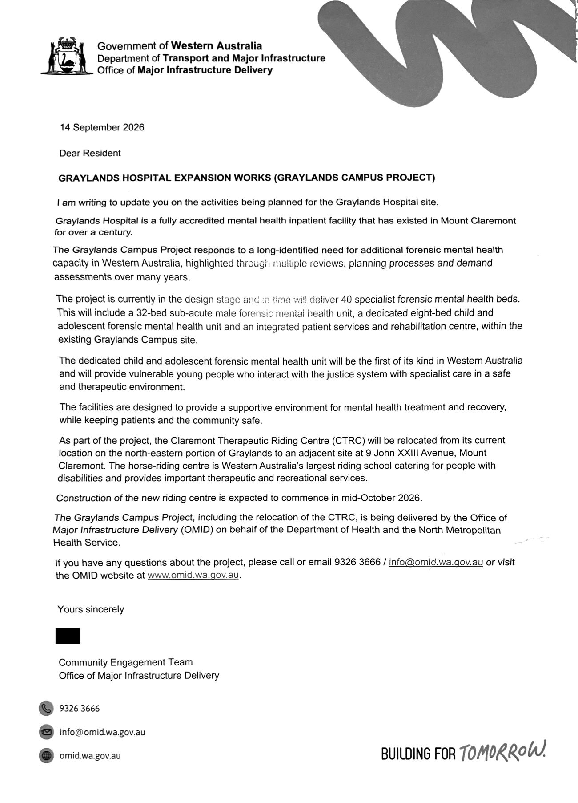
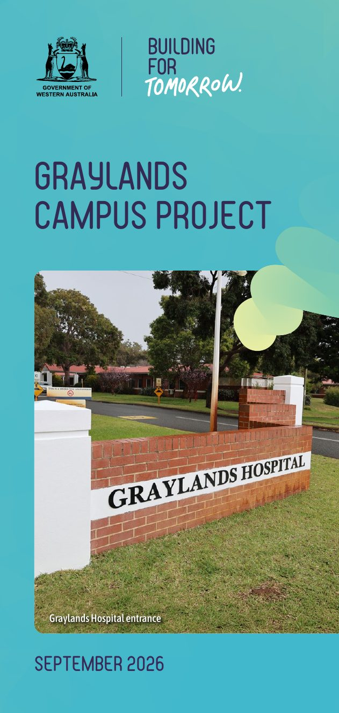

Told, not asked
Households near Graylands have received a letter headed “Graylands Hospital Expansion Works” from the Office of Major Infrastructure Delivery (OMID), with the project's September 2026 fact sheet. It tells you what is being built and when construction starts. It doesn't ask what you think, and the fact sheet it came with doesn't count residents among the consultation the project considers required.

The letter
Dated 14 September 2026 and signed for OMID's Community Engagement Team. The signing officer's first name has been removed.
Download the letter (PDF)
The fact sheet that came with it
OMID's Graylands Campus Project fact sheet, September 2026: the project, its timeline, and answers to common questions, including what consultation it considers required.
Download the fact sheet (PDF)What the letter means, and what it doesn't
What it means
- Construction of the replacement Claremont Therapeutic Riding Centre, at 9 John XXIII Avenue, is expected to start in mid-October 2026. The riding centre is moving to make room for the new buildings.
- The new units are being designed now. Their main construction has no start date. The government has told Parliament it will follow the riding centre move, which is expected to finish in mid-2027.
- The government's position on consultation is in the enclosed fact sheet: the only consultation it treats as required is internal clinical and design consultation.
- OMID has given residents a phone number and an email address for questions. That is the only route the letter opens.
What it doesn't mean
- It doesn't mean residents have been consulted. The letter asks no question, offers no meeting and sets no period for comment.
- It doesn't describe the whole plan. The 40 beds are the first stage of a long-term plan, assessed by Infrastructure WA, that takes the site to 136 forensic beds and 40 recovery beds at an estimated $698 million.
- It doesn't show how the community will be kept safe. The letter says the facilities are designed to do that. No safety or security assessment for this location has been published.
- It doesn't answer what residents have already asked. Most of the 17 requests put to the responsible Ministers in June 2026, including public meetings in Mount Claremont, have not been addressed.
Where the letter falls
The letter is dated after the site, the funding, the project plan and the builder were all settled, and about a month before construction begins.
Read it with the fact sheet it came with
The fact sheet in the same envelope answers the question most residents would ask first: what consultation does this project consider necessary? Its answer has three parts. Only the first is described as required.
These standards mandate internal clinical and design consultation including lived-experience groups, cultural experts and specialist and technical mental health experts.
Public consultation may occur through adjacent planning processes for example the public advertising of a development application. Community engagement may also take place when construction activities have the potential to disrupt neighbouring residents and businesses.
Construction of the new riding centre is expected to commence in mid-October 2026.
Read together, the two documents give residents one role: to be told when construction may affect them. Neither commits to asking residents about the site, the kind of facility, its security or its design. The one route to public comment the fact sheet names, an advertised development application, hasn't been confirmed. Whether one is required is the subject of a Freedom of Information application already lodged FOI Application 01.
The fact sheet uses “consultation” for the Taskforce's work with health and mental health experts. The letter describes its own purpose differently: “I am writing to update you on the activities being planned for the Graylands Hospital site.” The Planning Minister's office used the same two words for the same two groups in its July reply to residents. See the Minister's reply →
The same words Parliament got
Most of what the letter says about the project repeats the fact sheet. Two statements don't. One assures residents that the new facilities are designed to keep “patients and the community safe”. The other is the letter's description of the hospital itself, and the government has used it before.
Graylands Hospital is a fully accredited mental health inpatient facility that has existed in Mount Claremont for over a century.
Graylands Hospital is a fully authorised mental health inpatient facility that has existed in Mount Claremont for over a century.
The rest of that answer said authorised hospitals must meet standards “including appropriate security protocols”, and that the expansion will continue to meet them. It did not describe a single protocol. No safety or security assessment for this location has been published to support the letter's assurance.
What the letter leaves out
| The letter says | What it leaves out |
|---|---|
| “in time will deliver 40 specialist forensic mental health beds” | These 40 beds are Stage 1. The long-term plan assessed by Infrastructure WA takes the site to 136 forensic beds and 40 recovery beds, at an estimated $698 million. Asked in Parliament about Stage 2, the government gave no status, timing or bed numbers, only that “future announcements will be made in due course”. |
| “a 32-bed sub-acute male forensic mental health unit” | What sub-acute means. It is a lower security classification, built around structured community access as part of treatment. The boundaries and protocols for that access haven't been published. |
| “within the existing Graylands Campus site” | Where on the site. The government's tender drawings put the adult unit against John XXIII Avenue, and the child and adolescent unit against Brockway Road, the road Quintilian School fronts, about 400 metres further south. See the drawings → |
| “has existed in Mount Claremont for over a century” | That the century-old hospital is a general psychiatric hospital. The fact sheet itself dates the forensic service's beds at Graylands to 1993, when the site's first purpose-built secure unit opened. The long-term plan assessed by Infrastructure WA takes the site to zero general beds. Only Stage 1 is funded so far. |
| “keeping patients and the community safe” | How. No safety or security assessment for this location has been published, and no protocol for notifying neighbours if a patient leaves without authorisation. |
| “If you have any questions about the project, please call or email” | Any way to have a say. There is no meeting, no information session and no period for comment, and nothing about whether residents' views would be considered, or by whom. |
Three standards, all on the record before the letter was sent
The government's own practice at this site, in 1993
Before the Frankland Centre opened in 1993, the government placed newspaper advertisements calling for public submissions, gave information to the news media, and used letters and pamphlet drops to interested parties, inviting comment on the guidelines that would control forensic admissions by 30 November 1993 WA Government media statement, 10 Oct 1993. That process covered a single 30-bed unit on a site already chosen, and it still asked for comment. The 2026 letter and fact sheet ask for none. The full history →
The State's own mental health strategy
The Mental Health, Alcohol and Other Drug Strategy 2026–2031 says infrastructure planning of this kind needs “robust stakeholder consultation” including “the broader community”, and lists consultation on “location, site planning, construction and refurbishment design” as a priority, naming the Graylands Reconfiguration Program MHAOD Strategy 2026–2031. The letter says this project is in its design stage. It does not invite comment on the design.
The minimum set out on this site
Our FAQ describes what genuine community consultation would involve, at minimum. Here is the letter against each part.
| The minimum | The letter |
|---|---|
| Formally advertised public information sessions in Mount Claremont, covering every stage of the plan | Not offered. The letter covers Stage 1 only. |
| Direct written notification to every household within a defined radius, and every nearby school community | Partly. Households near the site received this letter. The area it covered, and whether nearby schools received it, haven't been stated. |
| A genuine opportunity to ask questions and get answers before the design is finalised | Partly. The letter offers a phone number and an email address. Whether written answers come back before the design is finalised is now the test. |
What you can do
Sign the petition
It backs the asks documented on the Concerns page.
Pass this page on
If a neighbour has had the letter, send them this page: mtclaremontcommunity.github.io/graylandsforensic/omid-letter.html
The full case on consultation, with every source, is in Concern 6.
Read Concern 6